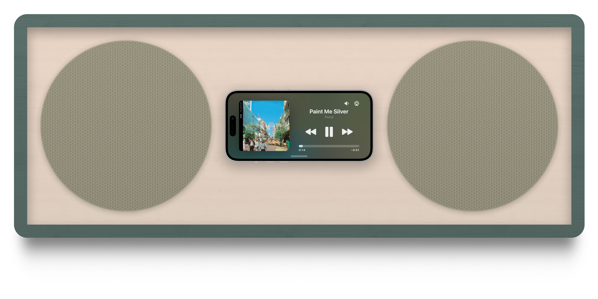
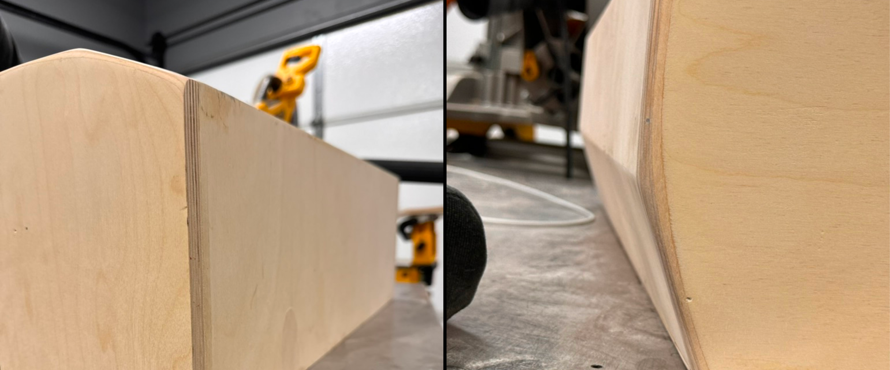

Home
Home
 Work
Work
 About
About
 Audio
Audio
The Raums-1
The best display is in your pocket.

Designed to blend in.
Raums-1 brings the best picture to sound. It's immersive audio, the best alarm clock, an intelligent assistant—everything your iPhone is plus room-filling sound.
Made November 2023
Research & Production
Introduction
This project was undertaken to learn design principles in a physical environment.
It creates an audio accessory for Standby, an iOS 17 feature that makes viewing information easy while charging and at a distance.
It creates an audio accessory for Standby, an iOS 17 feature that makes viewing information easy while charging and at a distance.
Production
Everything from wood material, thickness, color, charging method, and connectivity was designed for iPhone.
It takes inspiration from the simplicity of Braun radios, delivering a seamless audio visual experience without sacrificing aesthetics.
It takes inspiration from the simplicity of Braun radios, delivering a seamless audio visual experience without sacrificing aesthetics.
StandBy
StandBy's multiple views, from Now Playing and Clock, to Photos and widgets come alive on R-1s warm front plate.
StandBy is only activates when charging, so R-1 features a fast-charging MagSafe charger that keeps iPhone afloat.
And because StandBy adapts to light, it doubles as the perfect place to put your iPhone before bed, helping to reduce nighttime screen time.
StandBy is only activates when charging, so R-1 features a fast-charging MagSafe charger that keeps iPhone afloat.
And because StandBy adapts to light, it doubles as the perfect place to put your iPhone before bed, helping to reduce nighttime screen time.
Viewing Angle
R-1 features two viewing angles.
One parallel with the surface, and another that makes tapping, swiping, and viewing easy when standing.
The viewing angle was chosen to position the display and sound pointed at your face, and features a 25 degree angle in line with other home audio products.
One parallel with the surface, and another that makes tapping, swiping, and viewing easy when standing.
The viewing angle was chosen to position the display and sound pointed at your face, and features a 25 degree angle in line with other home audio products.
Sound
R-1 features six-inch, two-way drivers, perfect for everyday listening, from music to podcasts and YouTube.
It's compatible with AirPlay and Bluetooth, and uses iPhone microphones when FaceTiming or controlling your smart home with Siri.
Sound is crisp and clear, with an amplifyer that generates enormous sound.
It's compatible with AirPlay and Bluetooth, and uses iPhone microphones when FaceTiming or controlling your smart home with Siri.
Sound is crisp and clear, with an amplifyer that generates enormous sound.
Raums-1 Prototype: Construction
Plywood

Assembly

Glue

Front View

Sanding

Test

Fill

Assembly

Raums-1 Prototype
In a Room

Lessons Learned
Take More Photos
The physical environment is much more difficult to capture than digital.
Taking product photos is a craft of mine in need of practice. Bad shots hinder understanding process, and you cannot unbuild a prototype like you can in software.
Taking product photos is a craft of mine in need of practice. Bad shots hinder understanding process, and you cannot unbuild a prototype like you can in software.
Prototype the Prototype
Hours were spent figuring out the logics of cutting and assembling plywood at an angle.
Waste was avoided by roughly assembling pieces right after cuts. This enables updates to design to be made in real time and helps to build a conceptual model of the product before it's complete.
Waste was avoided by roughly assembling pieces right after cuts. This enables updates to design to be made in real time and helps to build a conceptual model of the product before it's complete.
Viewing Angle & FaceID
The viewing angle on R-1 is not steep enough to enable FaceID sensors in iPhone to catch your face.
R-2 will thus feature a steeper 35 degree angle, a more optimal angle that better enables interacting with and unlocking iPhone.
R-2 will thus feature a steeper 35 degree angle, a more optimal angle that better enables interacting with and unlocking iPhone.
Glossy Amplifies Imperfection
R-1 was finished with polyacrylic, a substance that protects the surface of the pain from wear and tear.
Even when using non-glossy polyacrylic, there is a glare that makes imperfections more visible. Stick with matte paint without polyacrylic, especially since R-1 is likely to be stationary throughout its lifetime.
Even when using non-glossy polyacrylic, there is a glare that makes imperfections more visible. Stick with matte paint without polyacrylic, especially since R-1 is likely to be stationary throughout its lifetime.